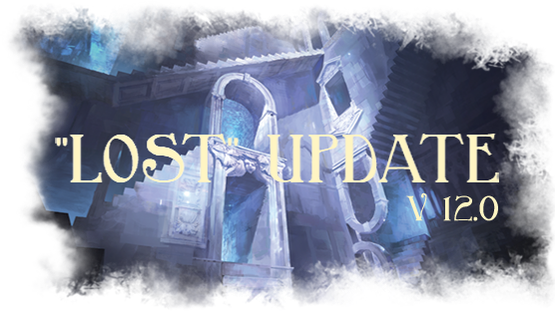
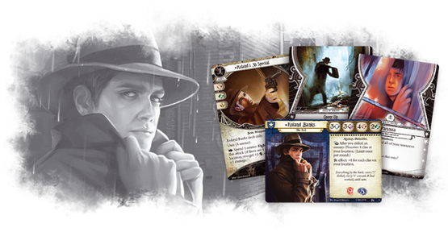
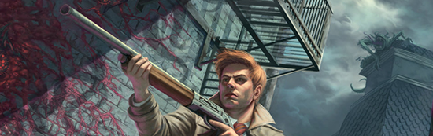
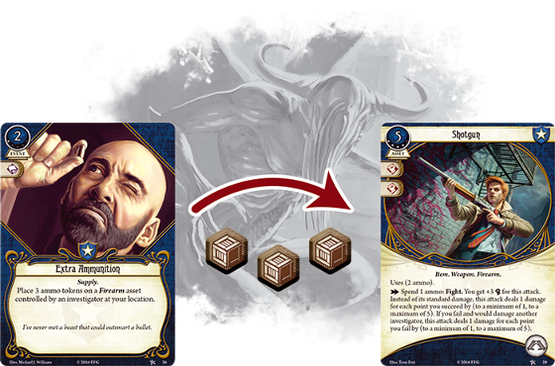
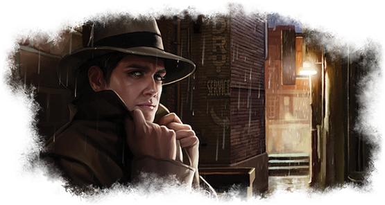
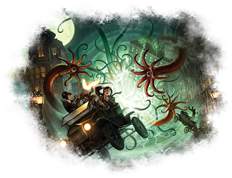
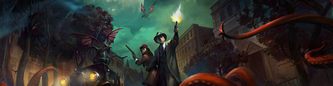

Level 0 co-operative Guardian / Seeker deck for 2 investigators that relies on discovering clues by defeating enemies rather than by investigating locations , which means both protecting the other investigator while also contributing to advance the Act deck.
Ideal co-op partners: Survivors and Mystics Agnes , Jim, Wendy and Pete.
Current version 12.0 - Check out the Version History to see the incremental changes.
Requires 2x Core Sets , the Dunwich Legacy Deluxe Expansion , the Miskatonic Museum , the Essex County Express , the Blood on the Altar , the Undimensioned and Unseen and the Lost in Time and Space Mythos Packs .
Missing a pack or two? Check out the Missing Expansions section for card replacements.
Going in solo ? Check out the Solo Experience section for tips.


"Everything by the book: every "i" dotted, every "t" crossed. It had worked, until now."
Roland Banks (Core Set #1)
There are 4x Weapon Assets in the deck, which makes it very likely to draw one in the opening hand and/or in the next couple of turns (Mulliganing for one is recommended). It also makes it much easier to defeat enemies, and therefore take advantage of Roland Banks 's signature ability
1x .45 Automatic A reliable weapon that sets the standard in cost and efficiency for all weapons. The +1 Damage bonus it gives during combat is absolutely essential in order to defeat enemies in one turn. Unfortunately, it is limited to 4 uses, so make good use of them.
1x Roland's .38 Special Roland Banks 's unique weapon, a cheaper and better version of the .45 Automatic . Use it in a location with at least one clue to profit from it's full +3 bonus.
2x Machete Arguably the best non-unique weapon from the core box, as it's cheaper than the .45 Automatic , still provides a +1 Damage bonus and is NOT limited to 4 uses. The drawback is that the +1 Damage bonus is lost if you are engaging more than just one enemy, but you can overcome this easily by defeating enemies as they spawn, and/or by having your co-op partner help you with engaging enemies strategically.
1x Prepared for the Worst A great Event that you can play when looking for a specific weapon from your deck, or just a weapon in general. Will be even better if you decide to upgrade into a Lightning Gun later, as it will essentially let you draw it whenever you need it.
Since this deck is so focused on combat, it also includes a couple of Events and Skills that will help out a lot when fighting enemies
2x Dodge Fast Event you can use to cancel an attack from particularly nasty enemy. Can be used on your co-op partner if you are in the same location, during his own turn. Very useful when facing attacks that deal high amounts of Horror.
2x Vicious Blow Skill you can commit during a test when fighting an enemy, to raise your chances of passing it and then deal +1 Damage. Allows you to deal 2 Damage to an enemy without using a weapon, or even deal a whopping 3 Damage (or more) to an enemy when using a weapon.
Sometimes you'll find yourself in a situation where no enemies are around, which means that you won't be able to discover clues using Roland Banks 's signature ability, and will have to do it by investigating locations
2x Flashlight A staple Asset that reduces the Shroud value of locations by 2 while investigating. It's limited to 3 uses, so save it for investigating locations with a high Shroud value.
2x Working a Hunch Fast Event you can use to immediately discover a clue at your location. Especially useful in locations with high Shroud values, or if you are short on time and do not want to rely on the luck of the Chaos Bag.
2x Deduction Skill you can commit during a test when investigating a location, to raise your chances of passing it and then discover an additional clue at your location.
Roland Banks 's biggest weakness is his low Sanity value, but it can be somewhat compensated with the Sanity provided by the various Ally Assets included in the deck
1x Art Student Ally that soaks up Horror and discovers a clue from your location, making it extremely efficient for its low cost in resource.
1x Beat Cop Excellent ally that soaks up Damage and Horror, provide a +1 bonus, and can be discarded to deal 1 point of Damage in a pinch.
2x Dr. William T. Maleson Amazing ally that offers 2 Health and 2 Sanity for only 1 resource, and a very powerful ability that allows you to redraw an Encounter card after dropping one of your clues at your current location.
1x "If it bleeds..." A very interesting Event that will help both you and your co-op partner recover Sanity after defeating an enemy (if you are at the same location). At worst, the card will make you recover 1 Sanity and at best, both your partner and you will recover 2 Sanity.
1x Smoking Pipe A cheap Asset that will help you recover up to 3 Sanity efficiently, albeit at the cost of Health.
2x Guts Most failed tests that deal Horror will be tests, so commit this Skill during a test to raise your chances of passing it, hopefully preventing you from taking Horror, and then draw a card.
The rest of the cards offer some much-needed flexibility
2x Emergency Cache Since most of the powerful Guardian Assets are quite expensive, this Event is very needed in the deck. Use it to gain 3 additional resources.
2x Shortcut This Fast Event will help a lot with moving around a bit faster in case of emergency. You can also use it to move while engaged to enemies without triggering an Attack of Opportunity.
2x Unexpected Courage Skill you can commit to any test to raise your chances of passing. Very flexible, but comes without the card draw.
2x Inquiring Mind Skill you can commit to any test to greatly raise your chances of passing. Very flexible, but comes without the card draw and there needs to be a clue at your location (which comes naturally with Roland).
"With a sickening smack, he struck the abomination over and over... until at last, it stopped moving."
Vicious Blows (Core Set #25)
Roland Banks 's personal Cover Up weakness Mitigated by all the cards that help with discovering clues at locations, and by the presence of your co-op partner who can also contribute discovering clues to resolve the weakness.
Roland Banks 's extremely low Sanity value Mitigated by the Ally Assets that help soak up Horror, the "If it bleeds..." Event, and the Smoking Pipe Asset.
Roland Banks 's low stat Mitigated by his very high Health value. It is therefore generally better to fight enemies rather than evade them.
Roland Banks 's lacklustre mobility Mitigated by the Shortcut Event and the high number of Fast cards in the deck.
Roland Banks 's lacklustre economy Mitigated by the Emergency Cache Event, and the high number of 0 and 1 cost cards in the deck.
"Sometimes, the most selfless acts can come from the strangest places."
Unexpected Courage (Core Set #93)
Exceptions to this rule you can keep Prepared for the Worst , as it will let you look in the top third of your deck for a weapon.

Best weapons to keep in order Roland's .38 Special > Machete > .45 Automatic .
Example great starting hand [1] Machete , Flashlight , Art Student , Deduction and Unexpected Courage .
Example great starting hand [2] .45 Automatic , Beat Cop , Vicious Blow , "If it bleeds..." * and * Emergency Cache .
"I knew I had seen this symbol before. I must warn the others before it is too late!"
Deduction (Core Set #39)
Roland Banks is a very straightforward investigator to play, and the general strategy of this deck is defeat enemies *discover clues *
At the start of a Scenario, assuming you have a good starting hand, the first actions to take should generally be equipping one or two Assets, ideally a weapon, and then moving towards a location with clues.
If you did not draw a weapon even after Mulliganing, prioritise drawing one rather than moving.
If you did not draw a weapon but did draw a Prepared for the Worst Event, then you can use it on your first turn to look for one. Otherwise, it's best to keep it in order to draw a specific weapon at a specific time, like Roland's .38 Special , or even the Lightning Gun if you decided to upgrade into it.
Always try to end your turn on a location with clues, ideally one with a high Shroud value, with the hope of drawing an enemy from the Encounter deck. That way, you'll be able to defeat the enemy using your weapon, and discover a clue thanks to Roland Banks 's signature ability (only provides ONE clue PER ROUND )
Only investigate locations if you did not draw an enemy from the Encounter deck, ideally, with a Flashlight Asset equipped.
If you use a Flashlight to investigate locations with a Shroud of 2 or less, you will ALWAYS succeed unless you draw the token.
Commit the Deduction Skill to the test while investigating a location to have a chance of discovering TWO clues.
Manage your resources carefully, try not to go down to zero so you can still play Fast cards like the Dodge and "If it bleeds..." Events when needed
Plan when to use the Emergency Cache Event in advance.
Gaining a resource should generally be the lowest priority action, so only do it when there is nothing else to do, or if you are planning on playing a costly card the next turn.
Drawing a card is generally not as good as moving, fighting or investigating, but it's generally better than gaining a resource.
If you ever need to draw a card, make sure it is the first action of your turn.
Keep a close eye on Roland Banks 's Sanity, as it is quite low. Equip your Ally Assets to use them as Horror shields, and use the "If it bleeds..." after defeating an enemy that deals Horror to recover Sanity and the Smoking Pipe to convert Health into Sanity. Also try to save your Guts , Unexpected Courage and Inquiring Mind Skills for tests that will deal Horror if failed
Try to equip the Art Student when in a location with a high Shroud value, don't be afraid to assign Horror to it, discard it, and make room for the next Ally Asset.
Try to save the "If it bleeds..." Event for Enemies that deal two Horror, and for when you and your co-op partner are in the same location, so you can BOTH recover TWO Sanity.
Stay close to your partner, try to not find yourselves on the opposite ends of the Scenario map, especially if they are bad at fighting enemies
Cover Up goes into play when drawn, and requires you to discover 3 clues at locations without picking them up before being able to remove it from play. If still in play when the game ends (for any reason), makes you suffer 1 Mental Trauma
It is one of the most punishing and most difficult to resolve personal weakness in the game.
Focus on resolving it as fast as possible when drawn.
Clues discovered from Roland Banks 's signature ability, and any other source, count towards resolving the weakness.
Clues discovered by other investigators at your location also count towards resolving the weakness.
Take the time to PLAN your turns, every action counts
When you need to move into an unrevealed location, make it a habit to only move with ONE action remaining after the move is done, never 0, and never more than 1. This is because some locations have Forced effect that hurt you when you reveal them if you have no actions remaining, or for EACH remaining actions.
Seeing as every Scenario is different, adapt your strategy accordingly. Check out the Scenario Tips section for advice.
The deck is quite cheap when it comes to actions, as about half of the playable cards are Fast , which makes it quite adaptable.
With the inclusion of the Dr. William T. Maleson Ally Asset from the last Mythos Pack, new and ambitious combo possibilities have opened up
When it comes to the cost/stats ratio, this is the best you're going to get: 1 resource for 2 Health and 2 Sanity is awesome value, so this ally is already a great Damage/Horror soak.
Its ability gives a chance to redraw the most horrible Encounter cards, especially the ones which test .
The cost of this ability is to drop one of your clue at your current location. If you're savvy enough, you can use this ability to strategically drop a clue on a location in order to make use of Roland's .38 Special and Inquiring Mind .
No more clues in play to resolve your Cover Up ? No problem, just drop a clue on a location with a Shroud of 1, and investigate away.
"If we wish to learn, we must first question everything we know."
Inquiring Mind (Undimensioned and Unseen #227)
Recommended upgrade priority 1 > 2 > 3 > 4
-1x .45 Automatic +1x Lightning Gun ••••• : More firepower is always good. Save it for targets with high Health and Fight values, preferably a Boss. Combos with Prepared for the Worst and Extra Ammunition . Priority 2
-2x Flashlight +2x Magnifying Glass • : Provides a smaller bonus while investigating locations, but is two resources cheaper, Fast , has unlimited uses and puts less stress on the Hand Slot since you can take it back into your hand. Priority 2
-1x Art Student +1x Beat Cop •• : Since you'll be upgrading the deck with other cards which will make Roland much more efficient at discovering clues, the Art Student is not as appealing anymore. The enemies will also get tougher as the Campaign advances, and you will appreciate the extra +1 stat. Priority 3
-1x Beat Cop +1x Beat Cop •• : Same resource cost, same +1 stat, one extra Health, and a much stronger ability. Priority 3
-1x Smoking Pipe +1x Elder Sign Amulet ••• : Great Horror shield, and takes advantage of the Accessory Slot. Provides more Sanity and does not cost you any Health. Priority 1
-1x "If it bleeds..." +1x Monster Slayer ••••• : Sometimes you're really going to need to defeat an enemy with a high Fight value and a lot of Health without wasting any time. This card will let you do exactly that. It's costly in XP, so it should not be a priority, but you will be glad to have it in your arsenal eventually. Priority 4

-2x Dodge * +2x "I've had worse…" •••• * : A direct upgrade from a Fast attack-cancelling effect that costs you resources, to a Fast attack-cancelling effect that gives you resources. Really costly in XP, but this new resource generator is a godsend to Roland. You do lose the ability to use it on your co-op partner, but you can easily get around that. Priority 4
-2x Emergency Cache +2x Stand Together ••• : A massive improvement over the Neutral Event, since it also offers card draw and is also beneficial to your co-op partner, but costly in XP so should not be a priority. Priority 3
-1x Shortcut +1x Pathfinder • : Amazing Talent Asset that might seem costly at first, but will end up paying for itself throughout the Scenario, as it effectively provides one additional fourth action per turn in almost all cases. Priority 1
-1x Shortcut +1x Extra Ammunition • : Grants any weapon more charges, should be saved for either the Lightning Gun or Roland's .38 Special Weapon Assets. Priority 2
-2x Deduction * * +2x Deduction •• : A clear upgrade, one more test icon, and a chance to discover TWO additional clue while investigating a location. Priority 2
-1x Guts +1x Moment of Respite ••• : Fills the same role as Guts with the added flexibility of restoring 3 Sanity. Priority 3
* -2x Vicious Blow * * +2x Vicious Blow •• * : A clear upgrade, one more test icon, and a chance to deal TWO additional Damage when fighting an enemy, so 3 Damage without a weapon, and 4 Damage with a weapon, making it a one-shot kill for most enemies. Priority 2
+1x Charisma ••• : With 4 Ally Assets competing for the one Ally Slot available, this Permanent Asset will allow you to equip TWO Ally Assets simultaneously, greatly relieving the pressure. Best of all, it doesn't count towards your deck size, and your start a Scenario with it already in play. Priority 3
+1x Keen Eye ••• : The Guardian 's Permanent Asset will allow you to get a +1 bonus to your and/or values for every 2 resources you spend, until the end of the current phase. The bonus provided will most likely for more than one test (which is good), meaning it will prove most useful when fighting a Boss, but the 2 resource cost is steep, especially for Roland (which is bad), and the stats it improves are already the ones that can be improved easily from other sources. All in all, an OK card which might surprise you from time to time, and since it does not need to be drawn, paid for or played, it's better to have it in the deck with the options it brings than not. Priority 3
"You can never be too prepared."
Emergency Cache (Core Set #88)
While this section obviously contains gameplay spoilers , I've written it in a way so there are no story spoilers , which includes not saying much about victory conditions.
That said, I do recommend trying each Scenario at least once before consulting this section, so you don't ruin the surprises!
In this Scenario, the Encounter deck is heavily focused on making you discard as many cards as possible from your deck, which is a big problem since you can't win if all your powerful cards are thrown in the discard pile before you can even use them.
The Scenario is also quite combat focused, and features powerful enemies with high Health and Fight values, as well as a very tough end Boss. Not only that, you'll be tasked to discover a significant amount of clues from locations with high Shroud values and/or tricky Forced effects, in order to progress.
Therefore, I suggest equipping a weapon as fast as possible before they get discarded, preferably a Machete so it won't run out of charges, and ideally also equipping a Flashlight , or have a hand of cards that help you discover clues.
Suggested Mulligan Any weapon , Flashlight , Art Student , Working a Hunch , Deduction .
Don't be afraid to draw if your hand is less than desirable, you need to draw your cards before they get discarded.
One of the worst Encounter cards will make you discard an Asset in play, so try to play around it at all times. For example, you could discard a depleted Flashlight / Smoking Pipe , or a cheap ally like Art Student .
If played first You'll have 10 Doom Tokens worth of time to roam around the locations before the end Boss manifests, but you won't have access to a special item that will help you defeat it.
If played second You'll only have 7 Doom Tokens worth of time, but you will have access to the special item. You'll need to investigate a location with a Shroud of 5 to pick it up, so keep your Flashlight and Deduction cards ready.
* First turns * Equip your Assets (priority on the weapon) and head to the Orne Library / Humanities Building where you will be able to discover clues either by investigating or by defeating enemies. Let your partner deal with the with the Student Union .
This Scenario features a departure from the established gameplay norms, as it is much more focused on interacting with locations rather than combat, even though it will be unavoidable at some point.
You'll be moving from location to location and discovering clues according to every location's special ability, while also avoiding arousing suspicion from the enemies which start off Aloof , meaning, will not automatically engage you.
Therefore, interact with the different locations as fast as possible to discover the clues, while also avoiding to provoke the enemies following you around, because it is possible to make them aggressive if you're not careful, which would make the Agenda deck advance faster than it should.
Suggested Mulligan Any weapon , Flashlight , Any Ally Asset , Shortcut , Emergency Cache .
Save up your resources as you'll be needing them, and do not equip your Ally Asset, you'll be needing it for a different purpose.
There will be an Aloof enemy following you through the first phase of the Scenario, so plan your movements carefully in order to avoid engaging him.
If played first You'll have 7 Doom Tokens worth of time to roam around the locations before things start to get serious as long as you don't provoke the Aloof enemies, otherwise you'll cut it down to 3 and you'll be fighting more enemies than you should.
If played second You'll only have 4 Doom Tokens worth of time so make every action counts, and it's even more important to not provoke the Aloof enemies.
First turns Don't equip more than 4 resources worth of Assets as you will need your resources throughout the first phase of the Scenario to advance, discover the clues on La Bella Luna , attract the Clover Club Pit Boss outside, then head to the Clover Club Lounge where you'll hopefully have an Ally Asset in hand to immediately discard for clues.
This Scenario is also a bit different from the others, as instead of having multiple enemies in the Encounter deck, it only features one single enemy which will keep coming back after you defeat it, a little bit stronger each time. The main emphasis is still clue gathering, however, and the Scenario features multiple locations with high Shroud values and tough Forced effects to slow you down.
There are two different ways to move from the first location to the second, and taking one or the other will also slightly change your gameplay experience throughout the Scenario. The first one will have you gather clues from a location with a high Shroud value, and the second will have you succeed one VERY tough test. You should, therefore, keep in mind which way you want to go when you are mulliganing your starting hand.
You are going to want to finish the Scenario as quickly as possible, as the one enemy that keeps coming back will get bigger and bigger until you will no longer be able to deal with it. It starts out small enough, so starting out with a weapon is still recommended.
Suggested Mulligan Machete , Flashlight , Art Student , Working a Hunch , Vicious Blow .
The locations you will need to investigate are tough, so any card that will help you discover clues easily are extra valuable here.
You will get extra XP if you choose to continue investigating locations even after having what you need to end the Scenario, so keep that in mind.
At some point, the enemy pursuing you will become Massive , which means it won't follow you if you leave the location (it will still deal an Attack of Opportunity if you decide to move). If you are ahead on the Agenda deck, now would be the best time to try and to get extra XP.
First turns Decide what way you are going to take in order to enter the Museum. In my experience, it's easier to go for the clues, so equip your Flashlight and get investigating. Also equip your weapon, which will hopefully be a Machete since you will never engage more than one enemy in the Scenario.
The most important thing to know when playing this Scenario is that you will be only able to move to the next location, AFTER discovering all the clues from your current locations. What you are going to focus on, is moving from location to location as quickly as possible, so discovering clues as fast as possible. You are going to be on a death-clock through the whole Scenario, as every time the Agenda deck advances, the leftmost locations are going to get removed from play. You obviously don't want to be there when it happens.
What is more, every location you will move to has a nasty Forced effect, and Doom will stack up quickly if you are unlucky with the Encounter deck. Also, Revelation effects and enemies from the Encounter deck are mostly based on trying to stop you from moving as much as possible, so GET MOVING .
You might also draw Helpless Passenger s from the Encounter deck which can be annoying, but if you equip your allies on the side, you will end the Scenario before they become a problem.
Suggested Mulligan Any weapon , Working a Hunch , Art Student , Flashlight , Deduction .
Cards that help with discovering clues are very useful in this Scenario ( Flashlight / Magnifying Glass if you already have upgraded into it).
Some Events from the Encounter deck will target your played Assets first, making the Helpless Passenger always vulnerable. Equipping your allies will make them able to tank the damage, preventing the Helpless Passenger from leaving play, and preventing you from stacking up Horror.
First turns Start by equipping a Flashlight , any weapon and start investigating immediately so you can move to the next location and deal with the Forced effect as fast as possible. Starting from here, try to move at least once every 2 rounds.

In this Scenario, the focus is back on investigating locations, so get your Flashlight s ready. What is unique to the Scenario, however, is that your Ally Assets in play are at risk of getting removed and/or neutralised by cards from the Encounter deck, so mind when you play them.
There will be a significant amount of randomness while setting up the Scenario, so the Shroud values and Forced / Revelation effects on locations will vary greatly per playthrough. Also, every time you clear a location of clues, you will have to resolve a random Encounter, adding to the unpredictability of the Scenario.
I suggest keeping your most powerful clue gathering cards for the very end of the Scenario, so while you are getting there, do not by wasteful when discovering clues.
Suggested Mulligan Any weapon , Flashlight , Art Student , Guts , Inquiring Mind .
Cards that help with mobility are very useful in this Scenario ( Shortcut / Pathfinder if you already have upgraded into it).
As mentioned before, your Ally Assets in play are constantly at risk, but I do not recommend never playing them. Instead, I recommend playing them when needed, but assigning Horror / Damage to them as quickly as possible. You do NOT want them removed by the Encounter deck .
In this Scenario, a specific enemy will allow you to discover a clue from any location when you defeat it. If possible, avoid defeating them early, and instead try to save them for the very end when they will be REALLY needed.
Take a good look at how locations connect in this Scenario. It is possible to never have to go back to the central location if you plan your movements carefully.
First turns Start by equipping a weapon and a Flashlight , and then take a GOOD look at how locations connect, because there could be dead ends depending on which ones are in play. Then, plan the most efficient routes, and then start moving / investigating.
In this Scenario, you will be hunting a certain number of big and tough enemies that can only be damaged by a special Story Asset, which you will obtain in the Scenario. The better you did in the previous Scenario, the tougher this one will be because you will have more of those enemies to defeat.
A lot of people dislike this one because of its overreliance on the stat, since you will need to succeed very tough tests in order to damage the beasties. With Roland's 3 , it is going to be pretty tough.
The good news is that you do not need to defeat all the big baddies, only as many as you can, which is exactly how you will want to play the Scenario. Defeating all of the (if you did really well in the previous Scenario) is going to be VERY difficult, so don't overextend or you might regret it and obtain a less desirable Resolution .
Suggested Mulligan Any Firearm weapon , Flashlight , Art Student , Guts , Shortcut .
Weapons are much less useful here, as you will not be able to damage Story enemies with them, but the Encounter deck will still feature some regular enemies that you might need to deal with.One of them is weak to Firearm weapons, so the Machete is inferior to any other weapon here.
You will be able to place your clues on the Story enemies to make them weaker, but you will need to get them from the locations first and their Shroud values are high. Therefore, any tool that will help you investigate is quite powerful here.
Aim to kill TWO Story enemies, only go for more if you can without risking yourself too much, and try to save all your Skills like Guts to be able to damage them more easily.
Pathfinder is great here, since you will be moving around a lot. The Story enemies will move randomly around locations, so always keep 1 buffer location between you and them unless you want them to come to you.
First turns Start by equipping a Firewarm , a Flashlight , and priorities discovering clues in order to get your special Story Asset you will need to defeat the baddies with.
This Scenario is a race against the clock, as failing it will end your Campaign . You will be trying to get to the top of a hill, with the Encounter deck and locations doing everything in their power to slow you down. You will have a total of 22 turns to win before the Scenario ends, and for every Story enemy you let escape in the previous Scenario, you will lose 1 turn. I have still managed to win with 3 escaped enemies, so it is not that handicapping.
There will be a main path to climb, with divergent paths to explore in order to get the clues will you need to advance. The locations you will have to investigate how varying Shroud values, but their Forced effects can really hurt you if you are not careful.
The scenario is investigation heavy since you will be trying to get clues as fast as possible, so keep your Flashlight handy. It will also be quite tough on your Sanity, so be prepared to equip allies early. The enemies you will be facing are also quite tough, so make sure you have upgraded into a Lightning Gun and the level 2 Vicious Blow to have better chances.
Suggested Mulligan Any Firearm weapon , Flashlight , any Ally Asset , Guts , Shortcut .
Some Encounter cards will hit you if you are on the main path and others if you are on divergent paths, but the latter are much worst than the former. I recommend spending as little time as possible on the divergent paths, so just grab your clues and get back on the main path.
Whenever you want to move to an unexplored divergent path location, do it so you still have ONE action left after the move. I have mentioned earlier that this should be the standard way of moving (see Playstyle Guide ), but I think it bears repeating, especially for this Scenario.
Just like for the previous Scenario, Firearm weapons are better than the Machete
First turns Start by equipping a Firewarm , a Flashlight and any Ally Asset, then head out off the main path to start discovering clues.
Final Scenario of the Dunwitch Legacy Campaign, so win or lose this is the end. Just like the previous Scenario, losing it means you lose the Campaign , so be vigilant.
This Scenario's quirk is that locations will be coming into play from the Encounter deck, instead of any other previously encountered location source. They will come into play with tough Revelation and Forced effects, so be ready to take a beating. Not only that, but locations will also be leaving play quickly for various reasons, so try not to be there when it happens.
It will be quite tough on your Sanity, so I do suggest already having upgraded into an Elder Sign Amulet and a Moment of Respite . The enemies are also very tough, so once again, the Lightning Gun and level 2 Vicious Blow will really help out. You will also need to discover clues in order to advance, so again, get your investigating tools ready.
Suggested Mulligan Any weapon , Flashlight , any Ally Asset , Guts , Shortcut .
Again, locations will be leaving play quite quickly, so make sure you are not on one when it happens, otherwise, you will be stacking up a lot of Horror really quickly.
You will notice that the locations that will come into play will basically link up into TWO different paths to get to the end. Maintaining one in play until you get to your objective is the key to succeeding here.
First turns Start by equipping a weapon, a Flashlight and start spending actions in order to put locations into play.
"You know this town like the back of your hand."
Shortcut (The Dunwich Legacy #22)
It is perfectly possible to play this deck solo with great performance.
Roland Banks can defeat enemies and discover clues like a champ, and he has tools available to deal with his low Sanity. However, the reasons why this deck fares better with two players, are tests and Cover Up
Even with some of the best tools available to Roland Banks included in the deck against tests ( Inquiring Mind , Unexpected Courage and Guts ), sometimes you will just not draw them

The same principle applies with Cover Up , in some Scenarios, you might not see it at all or draw it from the very beginning, but other times you might get REALLY unlucky and draw it at the very end of the Scenario, which is almost impossible to counter
In short, while being a great deck even when played solo, it is more consistent with a partner to have your back when it comes to mitigating your weaknesses ( tests and Cover Up ) and unpredictable bad drawing luck that comes with deck building card games.
When playing solo, it becomes essential to know what a Scenario brings so you can adapt to it, keep that in mind! Check out the Scenario Tips section for more.
With each new Mythos pack, we are seeing new Guardian cards which benefit both investigators, such as "If it bleeds..." , Stand Together and Leadership . While they are great even when used in solo, they really shine and gain insane amounts of value when triggered on both you and your co-op partner.
"Stay back! I'll handle this."
Guts (Core Set #89)
Depending on the Scenario, your co-op partner(s), or your own preference, it is possible to shift the deck's focus by switching a few cards while still keeping the same feel. You can also do it in between Scenarios, if you want to "tech" up to counter specific situations.
You can remove any of these cards to make room for the above, without changing the integrity of the deck:
"A good pipe can calm the most frazzled of nerves."
Smoking Pipe (The Miskatonic Museum #116)
No Hyperawareness and/or Physical Training They have both shown themselves to be too slow and too costly in resources and actions to be worth it, seeing as the deck already includes other costly Assets.
No Dynamite Blast Too slow, too expensive and too situational to be worth generally, but could be good in particular cases, so including in between Scenarios can be considered.
No First Aid Too slow, equipping Ally Assets is much more cost and time effective, as their Health and Sanity values effectively add up to Roland Banks 's, all for ONE action.
No Emergency Aid Same reasons as First Aid , but the fact that you can heal 2 Damage for one action and use it on your equipped Ally Assets, makes it so that it could situationally be good, and therefore "tech'ed in" between Scenarios.
No Evidence! I cut it from the deck because it serves the same purpose as Roland's ability. It can still be usefull for combat heavy Scenarios, but I would rather use the card slots for something the deck can't innately do.
No Bandolier So far I've never had any problems with the Hand Slots, as most of the Hand Assets run out of charges and are OK to replace. It might look more useful after upgrading into a Lightning Gun , but how many copies should be included? If one, then we have a consistency problem, if two, then that's two cards which are being cut out for something that, in my opinion, is not crucial.
No Leadership I've tried many times to make it work, but it ended up being too situational. In order to profit from its full effect, you'll have to draw it, be at the same location as your co-op partner, and they would need to resolve a test. It ended up spending most of its time just sitting around in my hand. Ultimately underwhelming, there are better cards to include in the deck.
"Die, you beast!"
Overpower (Core Set #91)
"It’s a small comfort, but you’ll take it."
"If it bleeds..." (Undimensioned and Unseen #225)

